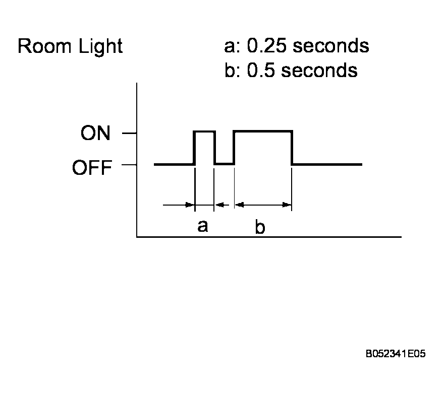
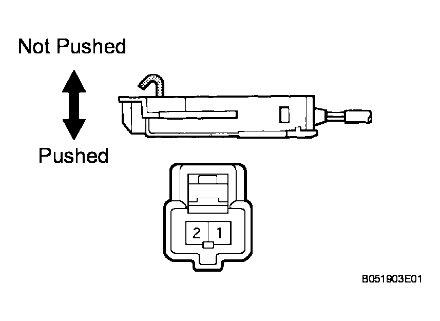
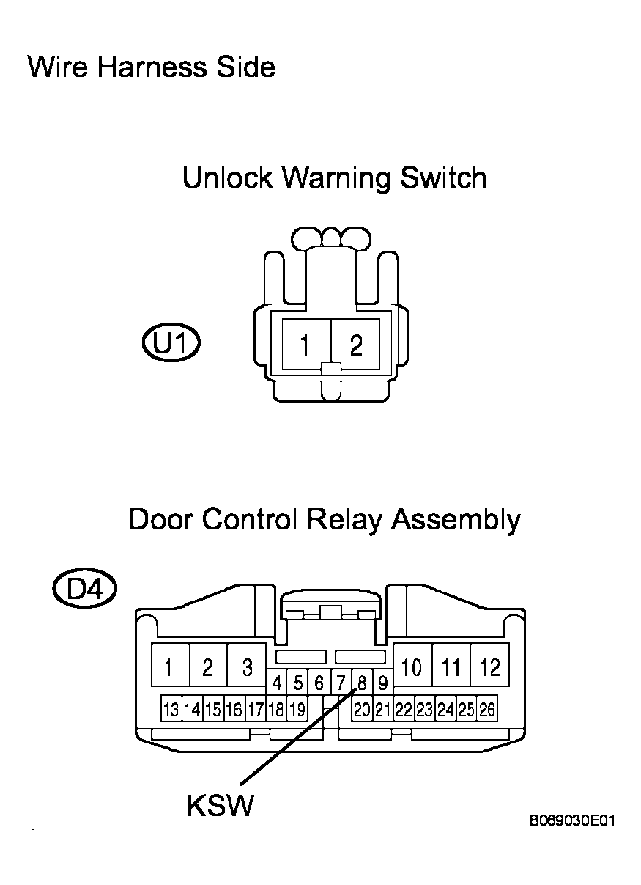
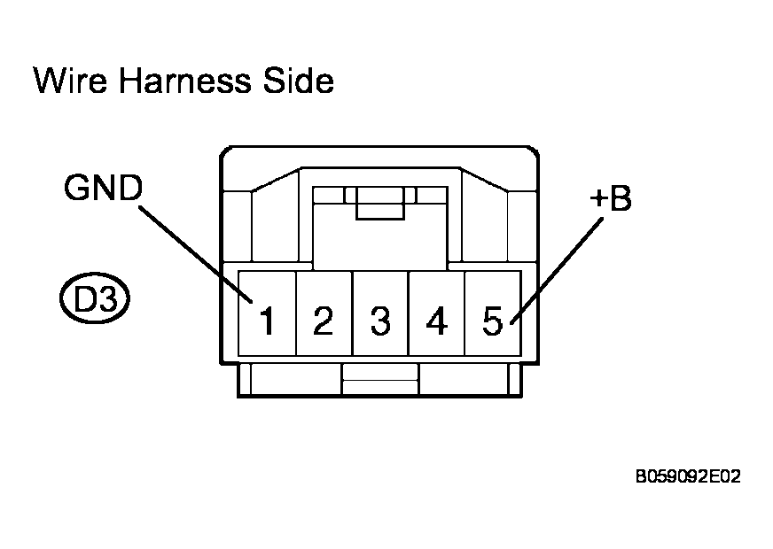
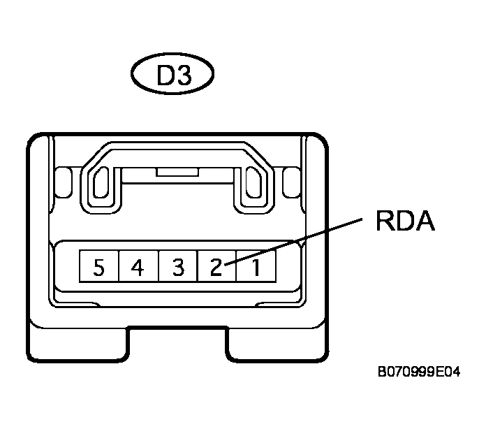
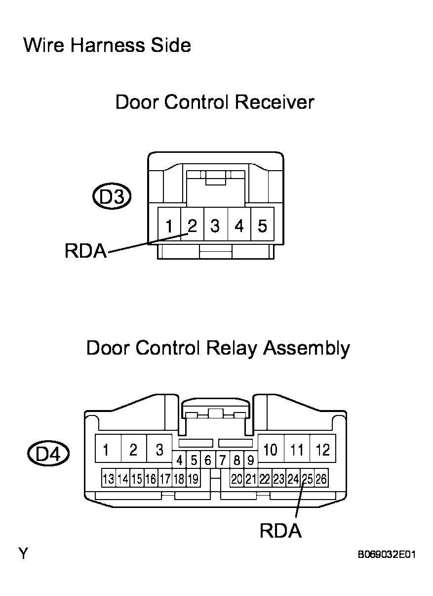

Inspection Procedure
HINT:
The switches described below transmit signals and are built into the door control transmitter.
- CHECK WIRELESS DOOR LOCK CONTROL FUNCTIONS
- Check the wireless door lock control functions (see ON-VEHICLE INSPECTION ).
OK : NORMAL
NG : Go to Next Step
- REPLACE TRANSMITTER BATTERY WITH NORMAL ONE
- After replacing the transmitter battery with a new or normal one, check that the wireless LOCK / UNLOCK operation is normal.
OK:
Wireless LOCK / UNLOCK operation is normal.
OK : REPLACE TRANSMITTER BATTERY
NG : Go to Next Step
- CHECK WIRELESS DOOR LOCK CONTROL FUNCTIONS (STANDARD OPERATION)
- Check if UNLOCK-LOCK operates in standard operation.NOTE: Standardized test procedure: Press the transmitter switch for 1 second while pointing the transmitter at the driver side door outside handle from a distance of 1 m (3.28 ft.). The transmitter should be pointed directly at the door handle, i.e. at 90°angle to the vehicle body.
NG : REPLACE DOOR CONTROL TRANSMITTER
OK : Go to Next Step
- Check if UNLOCK-LOCK operates in standard operation.
- CONFIRM ROOM LIGHT ILLUMINATES
- Check that the room light illuminates.
HINT:
When the room light does not illuminate, proceed to self-diagnostic mode after repairing the room light.
NEXT
- Check that the room light illuminates.
- SWITCH TO SELF-DIAGNOSTIC MODE
- Switch to self-diagnostic mode by operating the ignition key cylinder.
- Step 1: Ensure that the vehicle is in its initial condition (see ON-VEHICLE INSPECTION ), insert the key into the ignition key cylinder and remove it.
- Step 2: Within 5 seconds of removing the key (step 1), insert the key into the ignition key cylinder (ignition switch OFF) and perform the following once: Turn the ignition switch to ON and return it to OFF.
- Step 3: Within 30 seconds of turning the ignition switch OFF (step 2), perform the following 9 times: Turn the ignition switch to ON and return it to OFF.

Courtesy of © TOYOTA, LICENSE AGREEMENT TMS1002NOTE: If the operation has failed, the system will return to normal mode.HINT:
- Turning the ignition switch ON after step 3 has been completed will end self-diagnostic mode.
- Do not lock or unlock doors during self-diagnostic mode.
- Check that the system has switched to self-diagnostic mode by the blinking frequency of the room light.
NG : Go to step 9
OK : Go to Next Step
- Switch to self-diagnostic mode by operating the ignition key cylinder.
- CHECK BY SELF-DIAGNOSTIC MODE
- Inspect the diagnosis outputs when the door control transmitter switch is held down (the diagnosis outputs can be checked with the outputs of the room light).
Result
RESULT REFERENCEResult Proceed to The normal wave of the door LOCK and UNLOCK switch (room light blinking) A An unmatching recognition code (room light ON) B No diagnosis outputs (room light OFF) C
A : REPLACE DOOR CONTROL RELAY ASSEMBLY
C : Go to step 8
B : Go to Next Step
- Inspect the diagnosis outputs when the door control transmitter switch is held down (the diagnosis outputs can be checked with the outputs of the room light).
- REGISTER RECOGNITION CODE
- Check that the system can switch to rewrite mode or add mode and whether a recognition code can be registered.
NG : Go to step 15
OK : Go to Next Step
NORMAL (CARRY OUT INSPECTION OF FUNCTIONS)
- CHECK RESPONSE OF DOOR CONTROL RECEIVER
- When a new or normal door control transmitter switch of the same type vehicle is held down, check that a diagnosis of unmatching recognition code is output.
NG : Go to step 12
OK : REPLACE DOOR CONTROL TRANSMITTER
- CONFIRM INPUT METHOD OF SELF-DIAGNOSTIC MODE
Result
TESTER CONNECTION SPECIFIED CONDITIONResult Proceed to When the method for switching the system to self-diagnostic mode works. A When the method for switching the system to self-diagnostic mode does not work. B B : Go to step 5
A : Go to Next Step
- INSPECT UNLOCK WARNING SWITCH ASSEMBLY
- Measure the resistance of the switch.
Standard resistance

Courtesy of © TOYOTA, LICENSE AGREEMENT TMS1002TESTER CONNECTION SPECIFIED CONDITIONTester Connection Switch Condition Specified Condition 1 - 2 Not pushed 10 kΩ or higher 1 - 2 Pushed Below 1 Ω
NG : REPLACE UNLOCK WARNING SWITCH ASSEMBLY
OK : Go to Next Step
- Measure the resistance of the switch.
- CHECK WIRE HARNESS (UNLOCK WARNING SWITCH - DOOR CONTROL RELAY AND BODY GROUND)
- Disconnect the U1 switch connector.
- Disconnect the D4 relay connector.
- Measure the resistance of the wire harness side connectors.
Standard resistance

Courtesy of © TOYOTA, LICENSE AGREEMENT TMS1002TESTER CONNECTION SPECIFIED CONDITIONTester Connection Specified Condition U1-2 - D4-8 (KSW) Below 1 Ω U1-1 - Body ground Below 1 Ω
NG : REPAIR OR REPLACE HARNESS AND CONNECTOR
OK : Go to Next Step
- CHECK WIRE HARNESS (DOOR CONTROL RECEIVER - BATTERY AND BODY GROUND)
- Disconnect the D3 receiver connector.
- Measure the voltage of the wire harness side connector.
Standard voltage

Courtesy of © TOYOTA, LICENSE AGREEMENT TMS1002TESTER CONNECTION SPECIFIED CONDITIONTester Connection Specified Condition D3-5 (+B) - Body ground 10 to 14 V - Measure the resistance of the wire harness side connector.
Standard resistance
TESTER CONNECTION SPECIFIED CONDITIONTester Connection Specified Condition D3-1 (GND) - Body ground Below 1 Ω
NG : REPAIR OR REPLACE HARNESS AND CONNECTOR
OK : Go to Next Step
- CHECK DOOR CONTROL RECEIVER (OUTPUT)
- Reconnect the D3 receiver connector.
- Measure the voltage of the connector.
Standard voltage

Courtesy of © TOYOTA, LICENSE AGREEMENT TMS1002TESTER CONNECTION SPECIFIED CONDITIONTester Connection Condition Specified Condition D3-2 (RDA) - Body ground No key in ignition key cylinder, all doors closed and each transmitter switch OFF --> ON Below 1 V --> Approximately 6 to 7 V --> Below 1 V
NG : Go to step 15
OK : Go to Next Step
- CHECK WIRE HARNESS (DOOR CONTROL RECEIVER - DOOR CONTROL RELAY)
- Disconnect the D3 receiver connector.
- Disconnect the D4 relay connector.
- Measure the resistance of the wire harness side connectors.
Standard resistance

Courtesy of © TOYOTA, LICENSE AGREEMENT TMS1002MEASUREMENT SPECIFIED CONDITIONTester Connection Specified Condition D3-2 (RDA) - D4-25 (RDA) Below 1 Ω D3-2 (RDA) - Body ground 10 kΩ or higher D4-25 (RDA) - Body ground 10 kΩ or higher
NG : REPAIR OR REPLACE HARNESS AND CONNECTOR
OK : Go to Next Step
- REPLACE DOOR CONTROL RECEIVER WITH NORMAL ONE
- After replacing the door control receiver with a new or normal one, check that the wireless LOCK / UNLOCK operation is normal.
OK:
Wireless LOCK / UNLOCK operation is normal.
NG : REPLACE DOOR CONTROL RELAY ASSEMBLY
OK : Go to Next Step
REPLACE DOOR CONTROL RECEIVER
- After replacing the door control receiver with a new or normal one, check that the wireless LOCK / UNLOCK operation is normal.